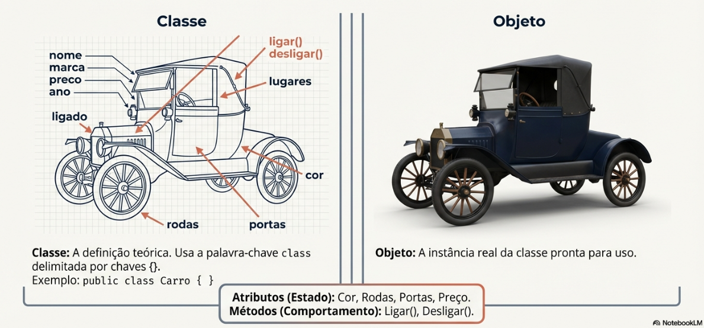

Da Lógica de Programação à Orientação a Objetos
A linguagem Java é baseada no princípio "Write Once, Run Anywhere" (WORA). Isso significa que em teoria um código escrito uma vez poderia rodar em qualquer sistema devido à JVM (Java Virtual Machine), que atua como uma camada entre o seu código e o hardware.
Para começar, você precisa do JDK (Java Development Kit), que contém as ferramentas para criar programas, enquanto o JRE (Java Runtime Environment) é usado apenas para executá-los.
Você já conhece algoritmos como sequências de passos ordenados. No Java, as instruções são finalizadas com ponto e vírgula (;) e o programa é sempre iniciado pelo método main().
Para exibir mensagens no terminal, utilizamos o comando:
public class OlaMundo {
public static void main(String[] args) {
System.out.println("Olá Mundo!");
}
}
Para ler o que o usuário digita, podemos usar a classe Scanner do pacote java.util. Para isso, importe o pacote.
import java.util.Scanner;
public class OlaEstudante {
public static void main(String[] args) {
// cria o Scanner para ler do teclado
Scanner entrada = new Scanner(System.in);
System.out.print("Digite seu nome: ");
String nomeEstudante = entrada.nextLine();
System.out.println("Olá " + nomeEstudante + "!");
entrada.close();
}
}
Na lógica estrutural, focamos em funções. Na Orientação a Objetos, pensamos em objetos do mundo real.
A abstração é escolher quais detalhes do mundo real importam para o nosso programa e quais podemos ignorar.
No caso de um carro, poderíamos registrar milhares de informações, mas para o nosso sistema talvez baste guardar cor, marca, modelo, ano, preço e se está ligado ou não. Na orientação a objetos, fazemos isso criando uma classe (como Carro) que representa o conceito de forma simplificada, com apenas os atributos e métodos necessários para o problema que queremos resolver.

É o molde ou planta. Define quais atributos (características) e métodos (ações) um objeto terá.
É uma instância da classe. Usamos a palavra-chave new para criar um objeto na memória.
// Classe Carro: definição do "molde" (classe)
public class Carro {
// Atributos (estado)
String cor;
String marca;
String modelo;
int ano;
double preco;
boolean ligado;
// Métodos (comportamento)
void ligar() {
ligado = true;
System.out.println("Carro ligado.");
}
void desligar() {
ligado = false;
System.out.println("Carro desligado.");
}
}
// Classe principal com método main: cria e consulta um objeto Carro
public class ProgramaCarro {
public static void main(String[] args) {
// Instanciando (criando) um objeto Carro
Carro meuCarro = new Carro();
meuCarro.cor = "Azul";
meuCarro.marca = "Ford";
meuCarro.modelo = "Modelo T";
meuCarro.ano = 1925;
meuCarro.preco = 35000.0;
// Consultando (lendo) os atributos do objeto
System.out.println("=== Dados do carro ===");
System.out.println("Marca: " + meuCarro.marca);
System.out.println("Modelo: " + meuCarro.modelo);
System.out.println("Ano: " + meuCarro.ano);
System.out.println("Cor: " + meuCarro.cor);
System.out.println("Preço: R$ " + meuCarro.preco);
// Usando os métodos (comportamento)
meuCarro.ligar();
System.out.println("Está ligado? " + meuCarro.ligado);
meuCarro.desligar();
System.out.println("Está ligado? " + meuCarro.ligado);
}
}
O Encapsulamento serve para esconder detalhes internos de uma classe e proteger os dados.
A herança permite criar uma nova classe reaproveitando características de outra. Criamos uma classe mais geral (por exemplo, Carro) e depois classes mais específicas (como CarroEletrico) que herdam atributos e métodos, adicionando seus próprios detalhes.
Isso evita código duplicado e ajuda a organizar melhor os conceitos do domínio do problema.
// Classe base (superclasse)
public class Carro {
String marca;
String modelo;
int ano;
void ligar() {
System.out.println("Carro ligado.");
}
void desligar() {
System.out.println("Carro desligado.");
}
}
// Classe derivada (subclasse) que herda de Carro
public class CarroEletrico extends Carro {
int capacidadeBateria; // em kWh
void recarregar() {
System.out.println("Recarregando bateria...");
}
}
// Classe principal para testar a herança
public class ProgramaHeranca {
public static void main(String[] args) {
CarroEletrico meuCarroEletrico = new CarroEletrico();
// Atributos herdados de Carro
meuCarroEletrico.marca = "Tesla";
meuCarroEletrico.modelo = "Model 3";
meuCarroEletrico.ano = 2024;
// Atributo específico de CarroEletrico
meuCarroEletrico.capacidadeBateria = 75;
// Usando métodos herdados
meuCarroEletrico.ligar();
System.out.println("Marca: " + meuCarroEletrico.marca);
System.out.println("Modelo: " + meuCarroEletrico.modelo);
System.out.println("Ano: " + meuCarroEletrico.ano);
System.out.println("Capacidade da bateria: "
+ meuCarroEletrico.capacidadeBateria + " kWh");
// Usando método específico da subclasse
meuCarroEletrico.recarregar();
meuCarroEletrico.desligar();
}
}
Polimorfismo significa “muitas formas”. Em Java, podemos usar uma referência do tipo da superclasse (Carro) apontando para objetos de subclasses diferentes (CarroEsportivo, CarroFamilia), chamando o mesmo método e obtendo comportamentos específicos.
Isso é útil quando queremos tratar vários tipos de objetos de forma uniforme e, ao mesmo tempo, permitir que cada um tenha seu próprio jeito de fazer a mesma ação.
// Superclasse
public class Carro {
String modelo;
void acelerar() {
System.out.println("Carro acelerando de forma genérica...");
}
}
// Subclasse 1
public class CarroEsportivo extends Carro {
@Override
void acelerar() {
System.out.println("Carro esportivo acelerando MUITO rápido! Vruuum!");
}
}
// Subclasse 2
public class CarroFamilia extends Carro {
@Override
void acelerar() {
System.out.println("Carro de família acelerando de forma suave e segura.");
}
}
// Classe principal demonstrando polimorfismo
public class ProgramaPolimorfismo {
public static void main(String[] args) {
Carro carro1 = new CarroEsportivo();
carro1.modelo = "Super GT";
Carro carro2 = new CarroFamilia();
carro2.modelo = "Minivan Confort";
System.out.println("Modelo: " + carro1.modelo);
carro1.acelerar(); // chama versão de CarroEsportivo
System.out.println("Modelo: " + carro2.modelo);
carro2.acelerar(); // chama versão de CarroFamilia
// Podemos colocar vários carros diferentes em um mesmo array de Carro
Carro[] garagem = new Carro[2];
garagem[0] = carro1;
garagem[1] = carro2;
System.out.println("\nTestando todos os carros da garagem:");
for (Carro c : garagem) {
System.out.println("-> " + c.modelo);
c.acelerar(); // comportamento varia conforme o tipo real do objeto
}
}
}
Resumo, vídeo gerado pelo NotebookLM com o link da página.
Não use "==" para comparar Strings: Em Java, == compara endereços de memória. Para comparar o texto, use .equals().
Nomenclatura: Classes começam com Maiúscula (PascalCase). Variáveis e métodos começam com minúscula (camelCase).
Nestes exercícios, o foco é entender a instancia e manipulação de objetos.
Crie uma classe CarroJogador que tenha, além dos atributos normais de um carro,
um atributo nivelNitro (de 0 a 100).
Implemente um método usarNitro() que:
"NITRO ATIVADO!");
Modifique a sua classe Carro para ter um atributo booleano fantasma.
Quando fantasma for true, o método ligar() deve imprimir
"Carro fantasma apareceu do nada!" em vez de "Carro ligado.".
No main, crie carros normais e carros fantasmas para comparar os comportamentos.
Crie uma classe Estudante com os atributos nome (String) e
matricula (String).
Depois crie uma classe com main que:
Estudante;nome e matricula;
Crie uma classe Livro com os atributos titulo (String),
autor (String) e paginas (int).
Depois crie uma classe com main que:
Livro com valores iniciais;
Crie uma classe Musica com os atributos titulo (String),
artista (String) e duracaoEmSegundos (int).
Depois crie uma classe com main que:
Crie uma classe Garagem que guarda Carros. Implemente métodos adicionarCarro(Carro c), listarCarros() e ligarTodos().
No main, crie alguns carros diferentes, adicione na garagem e teste os métodos.
Crie uma hierarquia de classes para representar um veículo dos seus sonhos (pode ser carro, nave espacial, vassoura voadora...). Use:
No main, crie uma coleção de veículos dos sonhos e faça um loop chamando esse método em todos, para ver o “show” no console.